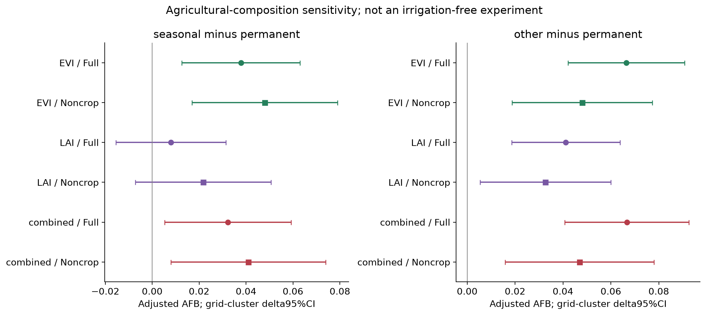
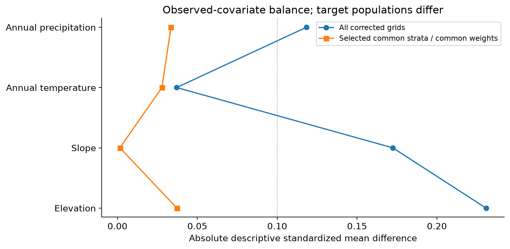
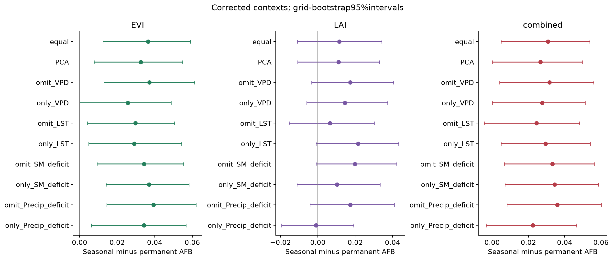
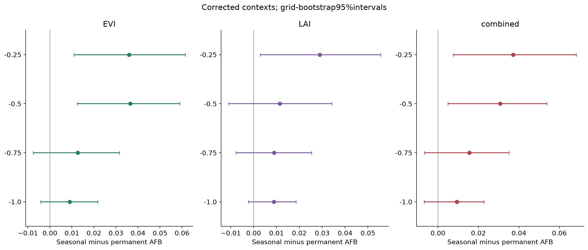
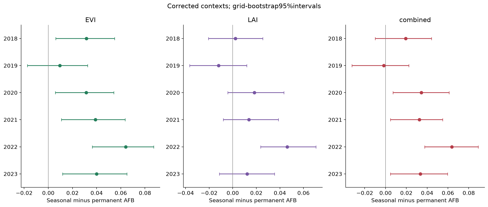
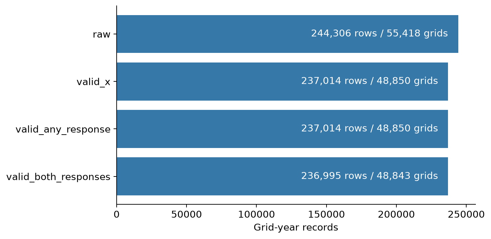

This guide accompanies the full reviewer response. It documents actual computations, including outcomes that support and limit the buffering interpretation. It does not establish whether prose was AI-assisted; AI assistance is disclosed separately. Original satellite-to-panel provenance is incomplete.
| step | operation | evidence | executed_result_or_boundary | code |
|---|---|---|---|---|
| 01 | Original data products | docs/data_sources.csv; reviewer_evidence/all_panel_fields_dictionary.csv | Known JRC/land-cover/climate/pilot products; original vegetation/thermal IDs partly unresolved | gee/; docs/original_sources/upstream_seasonal_source_only.ipynb |
| 02 | Supplied raw analysis export | logs/E00_manifest.json; reviewer_evidence/raw_input_manifest.json | 244306 grid-years,55418grids; no duplicate grid-year keys | src/audit_pipeline.py |
| 03 | Validity and seasonal anomaly recipe | experiments/E00_original_reproduction/sample_flow.csv | 236995 rows,48843grids; at most6 annual observations per seasonal position | docs/original_sources/upstream_seasonal_source_only.ipynb |
| 04 | Stress and event assignments | reviewer_evidence/worked_grid_year_examples.csv | HDSI four-component mean; Q25/Q75; EVI/LAI<-.5; OR event | src/audit_pipeline.py |
| 05 | Corrected aquatic contexts | experiments/E01_spatial_support/national_corrected_1km_contexts.csv | 2549permanent,15262seasonal,31032other; 17056-grid binary check zero mismatches | gee/corrected_near_contexts.py |
| 06 | Event risk and fragility | reviewer_evidence/risk_numerators_and_arithmetic.csv; reviewer_evidence/AFB_arithmetic.csv | Integer event counts / denominators -> high-low risk -> signed context contrast | src/audit_pipeline.py; src/analyze_corrected_1km.py |
| 07 | Measured-confounder adjustment | experiments/E01_spatial_support/corrected_1km/harmonized/ | M0/M1 same eligible sample; M2 common-covariate predictions,grid-cluster delta95%CI | src/harmonized_confounding.py; src/analyze_corrected_1km.py |
| 08 | Landscape and agricultural sensitivity | reviewer_evidence/corrected_covariate_balance.csv; experiments/E02_confounding/corrected_noncrop/ | 46strata; excludes crop/mosaic in additional analysis; no full irrigation control claimed | src/common_landscape.py; src/reviewer_noncrop.py |
| 09 | Robustness and spatial uncertainty | experiments/E01_spatial_support/corrected_1km/robustness/ | 10 indices,4 thresholds,6 analysis-year omissions,1/2/5degree blocks; all scenarios retained | src/robustness.py; src/analyze_corrected_1km.py |
| 10 | Quantitative visualizations | manuscript_revision/figure_source_map.csv; reviewer_evidence/figure_source_map.csv | Main8 figures plus corrected support plots; raw tables retained; no AI image generation | src/revision_figures.py; src/build_reviewer_evidence.py |
| context | response | n_context_rows | n_context_grids | low_events | low_n | high_events | high_n | risk_low | risk_high | fragility |
|---|---|---|---|---|---|---|---|---|---|---|
| permanent | EVI | 12259 | 2549 | 503 | 3080 | 891 | 3046 | 0.163312 | 0.292515 | 0.129203 |
| permanent | LAI | 12259 | 2549 | 343 | 3080 | 768 | 3046 | 0.111364 | 0.252134 | 0.140770 |
| permanent | combined | 12259 | 2549 | 661 | 3080 | 1141 | 3046 | 0.214610 | 0.374590 | 0.159979 |
| seasonal | EVI | 74835 | 15262 | 2725 | 19158 | 5792 | 18808 | 0.142238 | 0.307954 | 0.165716 |
| seasonal | LAI | 74835 | 15262 | 2158 | 19158 | 4981 | 18808 | 0.112642 | 0.264834 | 0.152192 |
| seasonal | combined | 74835 | 15262 | 3768 | 19158 | 7287 | 18808 | 0.196680 | 0.387442 | 0.190761 |
| other | EVI | 149901 | 31032 | 4976 | 37011 | 12138 | 37395 | 0.134447 | 0.324589 | 0.190142 |
| other | LAI | 149901 | 31032 | 4451 | 37011 | 11873 | 37395 | 0.120262 | 0.317502 | 0.197241 |
| other | combined | 149901 | 31032 | 7126 | 37011 | 15462 | 37395 | 0.192537 | 0.413478 | 0.220940 |
| factor | implemented | addresses | does_not_address |
|---|---|---|---|
| Different mean vegetation levels | grid x seasonal-position recent anomaly standardization | location/season mean and scale differences | different underlying sensitivities or unstable short references |
| Land-cover composition | categorical2018 grid modal land cover in M2 | observed broad cover differences | within-class management or dynamic crop changes |
| Terrain and background climate | elevation,slope,WorldClim MAT/MAP,quadratic geography,year indicators | measured landscape and broad location differences | unobserved irrigation,groundwater,soil; guarantee of causal exchangeability |
| Comparable landscapes | 46 supported LC x MAT/MAP/elevation-tertile strata; common weights | restricts to shared coarse settings | all within-stratum differences; different target population |
| Agricultural landscape contribution | exclude modal LCclasses12and14; fixed national HDSI cutpoints; refit M0/M1/M2 | dependence on dominant cropland and mosaic classes | identifying irrigation-free or groundwater-independent land |
| Repeated years and neighbouring cells | paired grid resampling,cluster sandwich,1/2/5degree blocks | specified temporal-cluster and spatial resampling dependence | unmeasured confounding or established true spatial correlation range |
| comparison | response | AFB | ci_low | ci_high | n_total | n_model | n_grid |
|---|---|---|---|---|---|---|---|
| seasonal | EVI | 0.048013 | 0.016996 | 0.079030 | 172463 | 82743 | 30212 |
| other | EVI | 0.048020 | 0.018750 | 0.077290 | 172463 | 82743 | 30212 |
| seasonal | LAI | 0.021772 | -0.007124 | 0.050668 | 172463 | 82743 | 30212 |
| other | LAI | 0.032683 | 0.005419 | 0.059946 | 172463 | 82743 | 30212 |
| seasonal | combined | 0.040971 | 0.007997 | 0.073946 | 172463 | 82743 | 30212 |
| other | combined | 0.046929 | 0.015846 | 0.078012 | 172463 | 82743 | 30212 |

E02/corrected_noncrop/M2_AFB.csv; full corrected1km harmonized/M2_AFB.csv

reviewer_evidence/corrected_covariate_balance.csv; .1 line is a descriptive reference, not a validity threshold

corrected1km/robustness/HDSI_variant_AFB.csv

corrected1km/robustness/event_threshold_AFB.csv

corrected1km/robustness/leave_analysis_year_out_AFB.csv

E00/sample_flow.csv; no new filtering invented